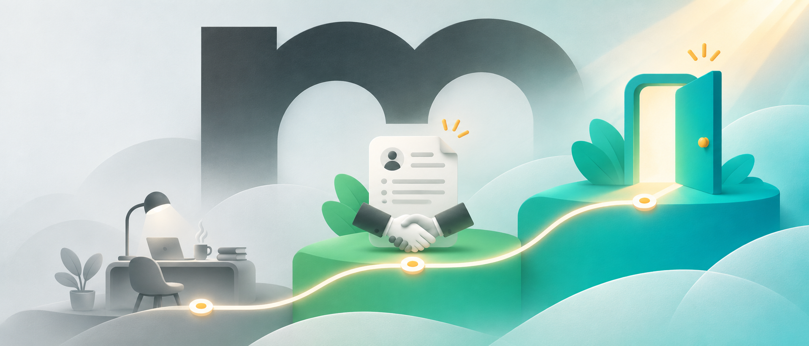
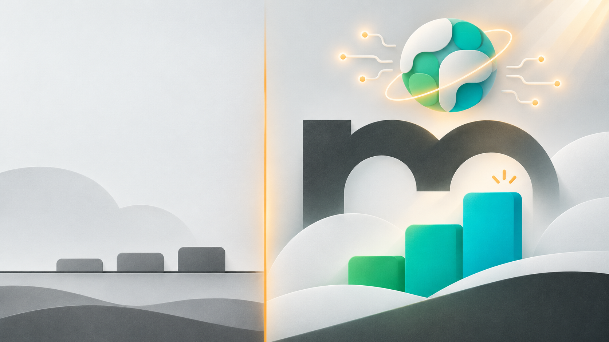

01
{{ c.pain.h }}
{{ p.t }}
{{ p.x }}
02
{{ c.imagine.h }}

{{ i.t }}
{{ c.imagine.close }}
ELTÉRÉS · Az utolsó mondat („A cégek nem azt fizetik meg…”) kiemelve, a bekezdés többi része „Részletek” mögött. Szó nem változott. AI-ablak: élő oldalról átvett szöveg (a dokumentumból hiányzott).
03
{{ c.now.h }}


{{ c.now.lead }}
{{ c.now.detail }}
{{ c.now.boxH }}
{{ t.y }}
Mi történik a cégeknél:
{{ t.a }}
Mit jelent neked:
{{ t.b }}
{{ c.now.box }}
UX · Négy sor, nyitható: a csukott sor már mutatja a „kinek”-et, így a látogató olvasás nélkül is önmagára ismer. Szöveg az élő oldalról (a táblázat hiányzott a dokumentumból).
04
{{ c.routes.h }}

{{ c.routes.age }}{{ c.routes.ageX }}
UX · Egy fülsor + egy nagy idővonal-panel: a három útvonal összehasonlítható, mégsem három hosszú lista. Hideg kampányoldalon ez a blokk a hero alá is előrehozható.
{{ c.feb.tag }}
05
{{ c.feb.h }}
{{ c.feb.p }}
{{ fb.t }}
{{ s.a }}
{{ s.b }}
{{ s.c }}
{{ c.feb.kinek }}
{{ fb.k }}{{ c.feb.old }}
{{ fb.o }}{{ c.feb.fin }}
{{ fb.f }}{{ c.feb.mkt }}: {{ fb.mk }}
{{ c.feb.allH }}
{{ a.t }}
{{ c.feb.later }}
UX · Bento: a három pillér nagy csempe, az „Így tanulsz” öt eleme kis csempe (a doksi bento-ötlete). Csempére kattintva a részletek alatta nyílnak. Az „Így tanulsz” szöveg itt él, lent nem ismétlődik.
06
{{ c.pillars.h }}
{{ b.h }}
{{ b.x }}
{{ pillTitle }}
{{ c.pillars.job.h }}
{{ c.pillars.job.p }}
{{ b.t }}
{{ c.pillars.job.n }}
{{ q.t }}
{{ l.h }}
{{ l.p }}
UX · Kétsoros, ellentétes irányú tréningfal (hoverre megáll, reduced-motion: áll). Alatta kétpaneles böngésző: bal oldalt a modullista, jobbra a kiválasztott modul képzései. ELTÉRÉS: videós anyagok száma eltér (112 számsor / 219 „Így tanulsz”) – ellenőrizendő.
07
{{ c.cat.h }}
{{ c.cat.intro }}
{{ n.a }}{{ n.b }}
{{ c.cat.lvl }}
{{ c.cat.when }}
{{ c.cat.multiH }}
{{ m.t }}{{ m.len }}
{{ c.cat.singleH }}
{{ c.cat.more }}
08
{{ c.why.h }}

{{ h.t }}
{{ x.t }}
{{ r.lab }}
Mentor Klub: {{ r.mk }}
{{ o.h }}: {{ o.v }}
{{ c.why.p1 }}{{ c.why.p2 }}{{ c.why.p3 }}
UX · Körhinta (vízszintes húzás/nyilak) témaszűrővel; a kártya tetején a szám az első, amit a szem lát. Alatta a Google-vélemények rácsa.
09
{{ c.res.h }}
{{ r.x }}
{{ r.n }}
10

{{ c.about.h }}
{{ c.about.p1 }}
{{ c.about.p2 }}
{{ n.a }}
{{ n.b }}
{{ c.about.ch }}
{{ c.about.cp }}
{{ t.n }}
{{ t.r }}
11
{{ c.steps.h }}
{{ s.n }}
{{ s.h }}
{{ s.x }}
12
{{ c.offer.h }}
{{ o.a }}
{{ c.offer.c2 }}: {{ o.b }}
UX · Itt a teljes ár- és garanciablokk; wide nézetben a jobb oldali ragadós panel közben végig látszik, tehát a csatlakozás végig egy kattintásra van.
13
{{ c.price.h }}
{{ c.price.full }} {{ c.price.fullV }}
{{ c.price.now }}
{{ c.price.nowV }}
{{ c.price.day }}
{{ c.price.acc }}
{{ g.h }} {{ g.x }}
{{ c.price.now2 }}
ELTÉRÉS · A „Kinek való?” (14.) ebben a változatban a dokumentum sorrendjében marad: az ár után, utolsó kételyoldóként a GYIK előtt.
14
{{ c.fit.yh }}
{{ y.t }}
{{ c.fit.nh }}
{{ y.t }}
15
{{ c.qual.h }}
{{ c.qual.p }}
{{ q.a }}
{{ q.b }}
{{ c.qual.qh }}
{{ c.qual.qa }}
{{ c.qual.proof }}
ELTÉRÉS · A GYIK-ban a „9. blokk” / „6. blokk” hivatkozást szövegesre cseréltem. Az SAP-teszt/mobilapp kérdés válasz nélkül van a forrásban, ezért kimaradt.
16